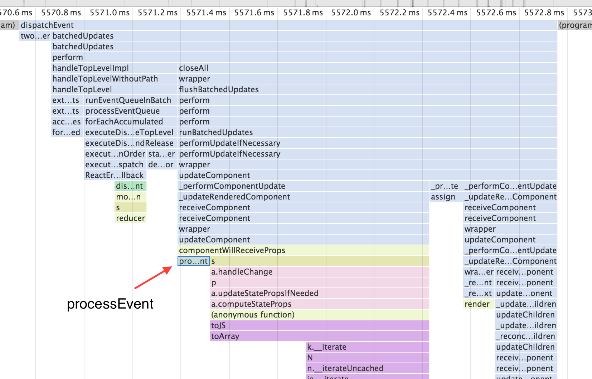

React + Web Audio
This article lays out the current approach that scat.io employs to use React alongside Web Audio. It specifically uses redux, but I think the pattern would work fine without it.
React is great because you get to lay out how your application state maps to HTML, then you can simply worry about modifying your state with the expectation that React will render it correctly. Mentally you can imagine that every time something changes, React wipes out your old HTML and replaces it with new HTML.
Web Audio is largely about scheduling events in the future. While I am not sure whether XML can represent these events in a straightforward way, I am not going to attempt it here. I pretty much like the event-scheduling nature of audio scheduling and don't want to tamper with it.
So we're left with a conflict: react is declarative, and web audio is event-driven. How should we get these paradigms to work together?
Relationship
Let's start with an axiom, that web audio and react will be sharing the same state. Given that, there are a limited number of ways the state, the react representation, and the web audio representation can relate:
- Audio and react run in parallel and aren't aware of one another
- The react representation of the app somehow contains the audio representation
It isn't possible / wouldn't make sense for the audio representation to contain the react representation, and I don't want to explore a situation where audio and react interact outside of messages to the state.
I have created small projects that kept react and audio apart. For larger projects, maintaining simplicity is important, so I'd prefer to not have two top-level representations of the state. Luckily react is good at being your top-level container, so the approach I took here is the 2nd option listed above: react contains the audio representation. If audio lives inside of react, the top-level component must look something like:
JS Bin on jsbin.com
SynthEngine would be where the audio-specific code lives. SynthUI and OnscreenKeyboard would be normal components.
Getting to events
That markup is well and good for the react side of things. SynthUI and OnscreenKeyboard will be straightforward react components. But what do we need to do in order to be able to write SynthEngine using those events we like?
The class definition above defines SynthEngine in a way that simply moves it away from declarative state (most of which usually resides in the render function) and into the processEvent method. What goes on inside processEvent is likely to be scheduling of audio events, and of course this logic can be imported from elsewhere.
Event scheduling is not the only audio task we have: we still need to set up the audio graph that we are scheduling events around. In this example there is hardly any of that, but it does use componentWillMount and componentWillUnmount to create and close the AudioContext.
Supporting events
We have markup for react containing a sound engine, and we have a class definition that lets us easily process events. What do we need in-between to populate that events array?
Here we wade into redux territory, but it should be fairly easy to adapt. Let's start by defining a state and reducer. Our app will have a visual keyboard and an audio synthesizer. So our store needs to keep track of which keys are currently being pressed and provide an events array for consumption by SynthEngine:
JS Bin on jsbin.comNote that when processing events, the reducer can have two changes to make: first updating the state in any permanent way, then pushing the event into the event queue for processing.
Triggering events
Now all we need to get things going is to actually trigger an event. Let's look at OnscreenKeyboard:
JS Bin on jsbin.comPut it together
Let's turn the above into a working app:
JS Bin on jsbin.comTo read the source code, click on the icon at the top left. Note that I switch from a simple object state to an Immutable.js Map. This keeps the time spent in the reducer down, which is very important if you're going to be placing react in between your input events and the sound engine.
Performance
One of my concerns placing the audio scheduling work within the react lifecycle was performance. React's core use case is to quickly handle general, visual UI updates, where 60 fps is considered great. But how much overhead does react create when trying to run events through it? As it turns out, it doesn't need to add much:
Below is the top bit of a flame chart from Chrome dev tools. The first section is a NOTE_ON event, the second is a NOTE_OFF event. Each took less than 2ms to complete here, meaning that we could handle up to 500 events per second.
The latency is even less than that because the SoundEngine is not the last component being processed. Here's a closer look at an event. It takes just 0.7ms for the event to get through the SoundEngine. The rest is spent processing the keyboard component and dealing with clearing the event queue.
It's still possible that this setup won't provide enough throughput for all audio applications, but for my needs it is sufficient.
Wrap up
This app architecture provides a lot of the things I want: a react-based UI, audio-related events as essentially first-class citizens, fast performance, a single state, and it is all well-contained.
In terms of scaling the application up, you could create UI and audio representations of each of your audio components. The audio sections would each listen to the event queue, perhaps subscribing to their own channel of events. Similar to MIDI.
Or, you could place your entire routing logic within a general SoundEngine component.
I realize that this write-up doesn't provide any input on how to actually write your audio scheduling code. My goal was just to deal with the interaction between audio and react, and this method is how I've chosen to do that for now.